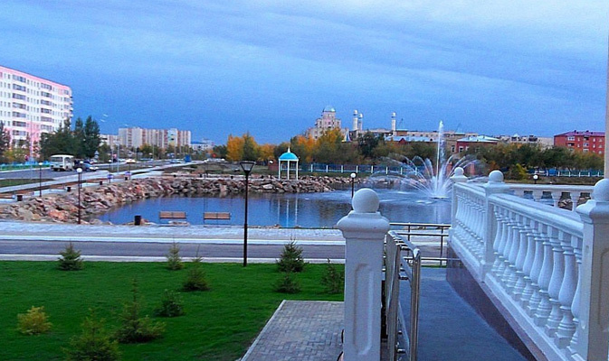
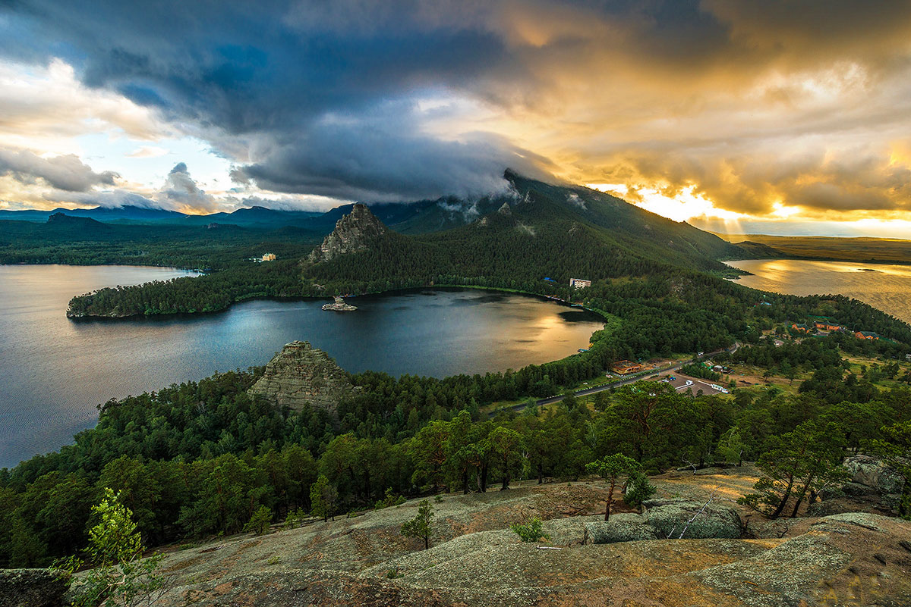
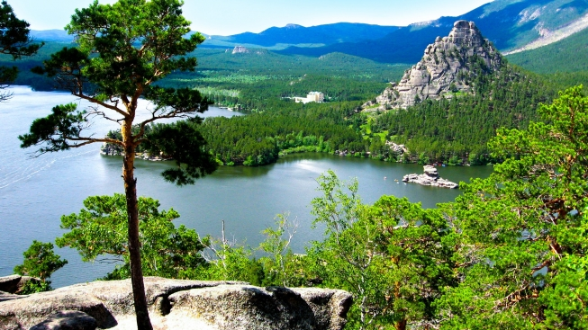
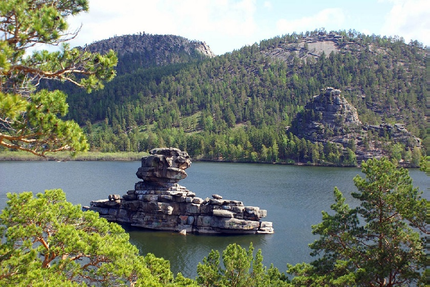
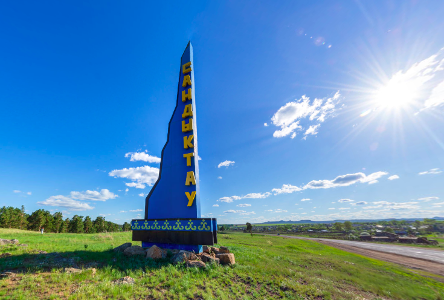
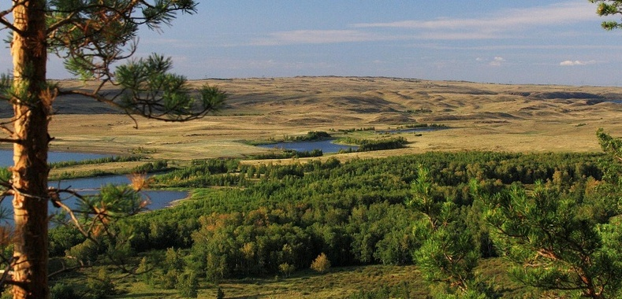
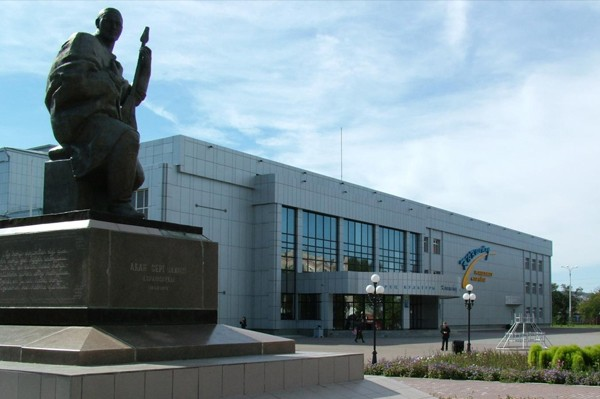
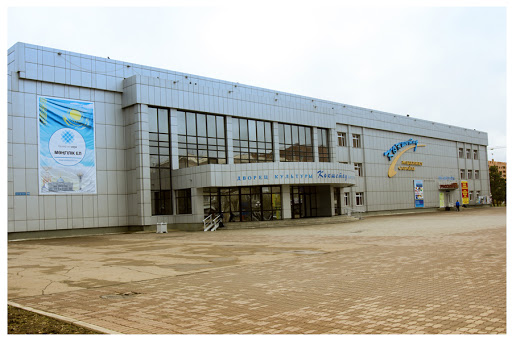

Кокшетау
Город Кокшетау находится на Кокшетауской возвышенности, которую геологи называют Кокшетауской глыбой и она имеет поэтическое название - "Казахская Швейцария".
Город был основан в 1824 году как посёлок казачьей станицы, а в 1868 году он стал уездным городом, который далее развивался как центр земледельческого и животноводческого хозяйства, как курортный город. Курорт "Боровое" со своими неподражаемыми красотами находится в 70 километрах от города.
Это опрятный, красивый город. Если подняться на вершину сопки, которая находится на юго-западе города, то взору откроется удивительный вид: на западе водная гладь озера и полоса пляжа, на северо-востоке простирается равнина, на юге поднимаются сопки.
В Кокшетау много парков, музеев, театров и других достопримечательностей, привлекающих гостей города, и радующих своей красотой
местных жителей.
 
Здесь указаны
Здесь указаны места в Кокшетау кудв стои поити:
Бурбай
Бурабай — климато-кумысолечебный курорт с 1910 года в Акмолинской области Казахстана. Входит в состав Боровской поселковой администрации. Возведён у одноимённого озера. Санатории, грязелечебницы и т. д. Сезон — круглый год. Основным показанием для лечения в санаториях Бурабая является наличие туберкулёза (в том числе в открытой форме) и заболеваний органов дыхания
Посёлок находится в 95 км к юго-востоку от Кокшетау, в 20 км к северу от железнодорожной станции «Курорт Боровое» (в городе Щучинск). Расположен на Кокшетауской возвышенности, на высоте около 480 м, в сосновом бору, на перешейке, разделяющем озёра Бурабай и Большое Чебачье. Бурабай называют «жемчужиной Казахстана» и «казахстанской Швейцарией». В национальном парке Бурабай расположено 14 крупных озёр, в том числе Бурабай, Щучье, Катарколь, а также множество мелких озёр. Визитной карточкой Борового называют гору Кокшетау (Синюха) высотой 947 метров. Фауна Бурабая включает около 300 видов позвоночных, флора — около 800 видов лесных, луговых, солончаковых растений.
 
Здесь указаны
Природный оазис Сандыктау
Гранитные сопки Сандыктау не могут похвастаться большими высотами: главная их вершина – гора Сандыктау имеет высоту 626 метров над уровнем моря. Однако, живописность местных речек, самой крупной из которых является приток Ишима под названием Жабай, парочка озер, многочисленные родники, сосновые леса, коими изобилует местность, а также хорошие шансы для сбора ягод и грибов, делают Сандыктау одним из самых приятных мест для отдыха во всем Северном Казахстане. Причем, надо сказать, что эти места весьма примечательны отличными условиями для зимних видов отдыха, в частности, лыжных прогулок, что для Казахстана, с присущим ему сезонным характером туризма, в общем-то редкость. Административным центром района и местом, где всегда можно остановиться на ночлег, является поселок Балкашино, расположенный западнее горного массива.
 
Здесь указаны
Городской дворец культуры
Дворец культуры – важное для горожан место, ведь здесь проводятся различные мероприятия, посвящённые культурным или политическим событиям. В начале 2000-х годов был произведён полный ремонт внутренних помещений и фасада здания.
На сегодняшний день дворец культуры может похвастаться четырьмя прекрасно оборудованными залами: два для проведения танцевальных мероприятий, один для выставочных, а также зрительный.
Практически вся творческая жизнь сосредоточена в стенах этого ДК. Он является вторым домом для нескольких сот человек, занимающихся в секциях и кружках. Результаты деятельности этих коллективов можно увидеть на праздничных концертах и представлениях
 
Здесь указаны
Остров на озере Имантау
Имантауская зона отдыха представляет собой природный оазис недалеко от Кокшетау: горно-лесной массив, чистейшие водоемы и, конечно, озеро Имантау, которое по праву считается одним из самых красивых озер в регионе. Имантау - памятник природы республиканского значения. С высоты птичьего полета остров имеет форму сердца. Площадь его составляет 36 га.
Остров покрыт редким для этих мест кустарником можжевельника казацкого, который произрастает на побережье острова и придает ему уникальный вид. На острове произрастает сосна обыкновенная, береза бородавчатая, вишня, малина. Живой напочвенный покров представлен клубникой, земляникой, различными лекарственными растениями. Из животного мира встречаются рептилии такие, как уж, гадюка, ящерица.